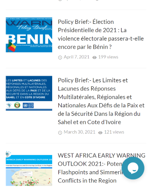

This above organization had portrayed the principles of Visual hierarchy at their site by ranking their design elements and influence for the users to view.
WANEP

This above organization had portrayed the principle of alignment by unified the entire page by aligning every object with an edge of some other object.
WEST AFRICA ILEA
This above organization had portrayed the principle of proximity by making sure items on their page are related to each other. The space between are vary to indicate the closeness or the importance of the relationship.